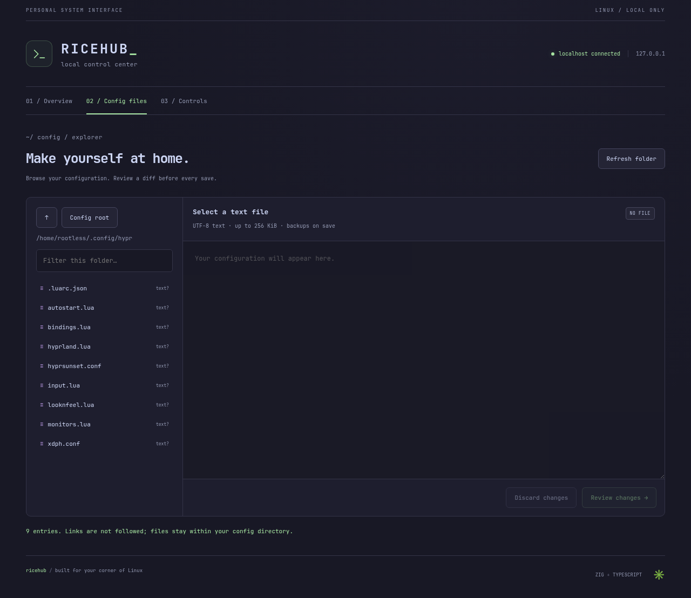
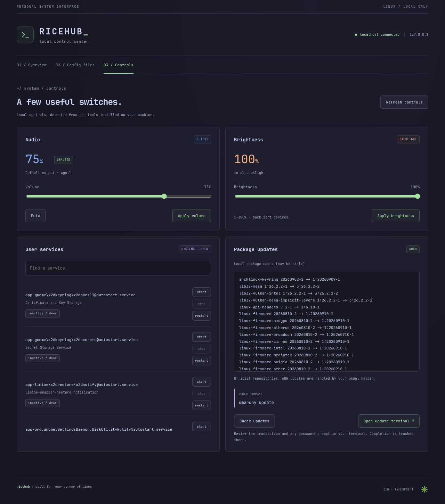
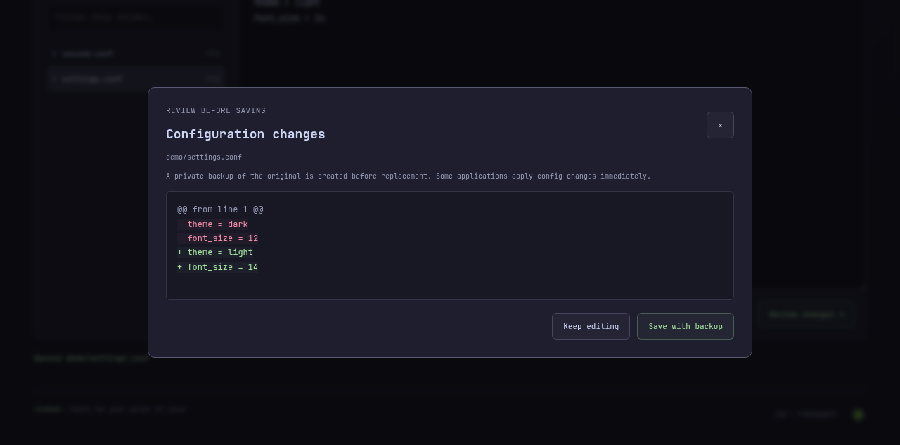

See the signal
System, kernel, CPU, memory, uptime, shell, and session data read directly from your machine.
LOCAL / PRIVATE / EXTENSIBLE
A fast, terminal-inspired control center for inspecting your Linux setup, browsing configs, and triggering safe system actions.
No cloud. No telemetry. Just your localhost.
“The best setup is the one you can understand at a glance.”
— built for people who live in their terminal01 / WHAT IT DOES
System, kernel, CPU, memory, uptime, shell, and session data read directly from your machine.
Explore ~/.config in a focused file browser and inspect exactly what is on disk.
Reload Hyprland and run supported actions through narrow, validated endpoints.
A small Zig server binds to localhost. No account, database, or background service required.
02 / IN THE WILD
A dashboard that feels like a good terminal: quiet when everything is fine, clear when it is not.



03 / GET STARTED
RiceHub is designed for Arch-based desktops, but works anywhere Zig and Node are available.